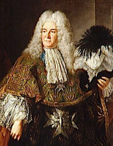
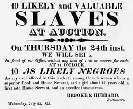
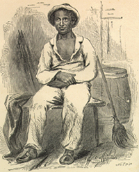
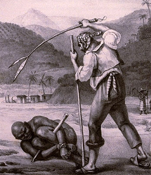

|
The French brought enslaved Africans into their new colony of Louisiana in the
early eighteenth century. During these final years of the reign of Louis XIV,
France experienced financial troubles and a decline from preeminence in Europe.
Mercantile authorities hoped to recoup French fortunes by exploiting the
presumed riches of the lower Mississippi River valley. However, they experienced
perennial difficulties recruiting and maintaining settlers, especially ones
willing to till the rich soil in the area's subtropical climate. Enslaving
Indians proved as ineffectual as it had been in the British North American
colonies. The French, therefore, imported black slaves like those who were
already producing great wealth in the French West Indies.
|

Antoine Crozat
|
Antoine Crozat, a wealthy merchant and slave trader, became proprietor of
Louisiana in 1712; his patent from the crown required that he settle his colony
with white Catholics and black slaves. In 1717, John Law's Company of the West
succeeded the disillusioned and bankrupt Crozat. This chartered company promised
to send 3,000 blacks to Louisiana within ten years. When Law's reorganized
Company of the Indies nearly collapsed in 1721, the struggling colony had a
population of only 684 whites and 565 blacks. Although over 2,000 slaves had
entered Louisiana, an appalling death rate, attributable mostly to disease,
killed off immigrants to its unhealthy lowlands. Acclimation--surviving for two
years--was a vital concern for both masters and slaves.
Bourbon officials adapted the slave codes of the French West Indies to the
situation in Louisiana, issuing a Code Noir in 1724. Unlike British slave
codes but akin to those of Spain and Portugal, it recognized slaves as persons
who had certain, limited rights. For instance, the code prohibited masters from
selling slave children away from their mothers and from inflicting certain
severe punishments; it required that slaves be baptized, catechized, married,
and buried as Roman Catholics. It also obligated masters to provide their
servants with adequate food, clothing, and shelter. In practice, individual
masters ignored this code with impunity.
Latin masters usually lived in closer familial intimacy with their slaves
than did Anglo-Americans. Yet such domestic patterns did not ameliorate French
and Spanish slavery. Instead, they probably increased the tension between blacks
and whites because slaves knew their masters' human frailties and were in close
enough contact with them to pose a constant threat. Fearing violence,
slaveholders maintained dominance through intimidation and sometimes violent
repression. Furthermore, colonial planters expected to earn a good return on
investments in human flesh; they typically followed the West Indian pattern of
overworking slaves, who were predominantly young males, and replacing the many
who died with newly imported stock. Despite the code, few cases to protect slave
"rights" reached court, and very few slaves became practicing Catholics in the
colonial era.
While Louisiana was a large, neglected French colony and later from the 1760s
to 1803 a geographically smaller Spanish colony, some slaves were artisans or
personal servants, but the majority worked in plantation agriculture. Their
numbers grew from 4,519 out of a total population of 11,224 in 1771 to 16,544 of
32,062 in 1785. A limited number of politically influential concessionaires were
the only masters to acquire sizable slaveholdings under Bourbon France and
Bourbon Spain. These individuals prospered as their slaves produced rice,
indigo, tobacco, and lumber for export, but because of mercantile trade
restrictions and difficulties developing staple crops truly suited to Louisiana
conditions, the colony foundered.
Several developments at the end of the eighteenth and the beginning of the
nineteenth centuries infused new life and new direction into Louisiana's economy
and its system of slavery. The invention of the cotton gin and the spread of
mechanized spinning and weaving rewarded those who grew cotton, a staple crop
well suited to production by forced labor. Meanwhile, in 1795, an innovative
planter, Etienne de Bore, profitably produced granulated sugar from Tahitian
cane grown near New Orleans. In these same years, numerous planters and slaves
who were familiar with cultivating and processing sugar fled the revolt against
French authority on Saint-Domingue and ultimately settled in south Louisiana. By
1812, another technological innovation, the steamboat, began traversing the many
waterways of Louisiana; it was soon adapted to transporting these bulky staple
crops to New Orleans for export. Given sufficient planters and farm laborers, a
stable government as part of the United States, and the industrializing world's
growing markets for cotton and sugar, Louisiana was poised to reap the
prosperity which had bypassed it in the colonial era.
The Spanish had brought to Louisiana their slave code, Las Siete Partidas. By
emphasizing the moral and reciprocal aspects of the master-slave relationship,
by trying to curtail the slave trade from Africa and the West Indies, and by
requiring government officials to enforce these laws, the new regime attempted,
with little success, to protect Louisiana bondsmen.
Both the French and the Spanish slave codes contained specific provisions for
manumitting slaves. Several factors caused the numbers of freed blacks to
increase dramatically during the Spanish colonial and American territorial
periods. The paucity of marriageable white women combined with lenient Latin
attitudes conduced many white men to cohabit with black women; they often freed
the children of these unions. Moreover, the Spanish authorities saw the free
people of color as a stabilizing influence in a colony thinly populated by
headstrong Frenchmen and restive slaves. Free blacks not only occupied an
important economic niche as skilled craftsmen, but they also filled out the
ranks of the militia in this military outpost on the edge of the Spanish empire.
Finally, large numbers of free people of color entered Louisiana, along with the
other refugees from the tumult in Saint-Domingue.
Ever-present fears of slave insurrections date from the colonial era. Rumors
and plots abounded, and authorities actually thwarted well-documented
conspiracies in 1791 and 1795. Friction persisted between slaveholders, who
wanted tight control over their slaves, and Spanish authorities, who sought just
treatment for blacks under the law. Simultaneously, conflict arose between
planters, who wanted to buy more slaves in order to produce more wealth, and the
Spanish regime, which tried to close off slave trade so as to keep out
troublemakers and revolutionary ideas. After the Louisiana Purchase, the
territorial legislature addressed the first problem in 1806 with one of the
nation's most comprehensive slave codes. It reinforced the autonomy of the
master over his own servants. The other controversy was exacerbated under
American control because Congress stopped Louisiana's foreign slave trade in
1804 and the U.S. Constitution prohibited any further importation of slaves into
the country as of 1808. Considerable pressure from French Creole planters did,
however, convince Congress to approve a temporary exception. It allowed some
2,700 white Saint-Domingan refugees, recently expelled from aSylum in Cuba, to
enter Louisiana with more than 3,000 of their slaves.
|

An advertisement for an auction of slaves in Louisiana
|
Frequently repeated concerns that the blacks, both slave and free, who
migrated from Saint-Domingue, would bring dangerous ideas into Louisiana
materialized in the great slave revolt of 1811--the United States's largest
slave uprising. Between 150 and 500 blacks took farm tools as weapons and
marched in ranks from their plantations down river towards New Orleans. They
killed two whites and destroyed considerable property. The civil and military
authorities quickly killed at least sixty-six blacks in a one-sided battle. A
hastily convened court tried some thirty others; twenty-one of these were found
guilty and executed. To forestall other revolts, the whites displayed the
severed heads of the insurrection's leaders on pikes erected along the river
road and kept this alarming incident out of the newspapers.
This revolt substantiated the whites' worst fears. Thereafter, as part of the
United States, Louisiana repeatedly tightened its slave code, making it more
like that of the other Southern states and requiring documents which proved the
place of origin and warranted the good behavior of all slaves offered for sale.
Unlike its sister states, however, Louisiana law continued to assert that slaves
were people and were not merely chattel property.
Interest in reviving the foreign slave trade persisted. A tide of
Anglo-American immigrants surged into the Territory of Orleans, giving it
sufficient population for statehood in 1812. Some settlers brought slaves with
them from the older states where exhausted soil devalued labor. All of the
aspiring planters wanted low-cost slave labor to help them make their fortunes
growing sugar and cotton in Louisiana's rich alluvial soil. Slaveholders already
settled in Louisiana were loath to part with seasoned slaves; they, too, wanted
more. Others in the state always feared that the continued influx of slaves
encouraged social unrest. Following Nat Turner's revolt, the state legislature
briefly curtailed the domestic slave trade. Yet the economic and political
interests of the powerful planters were still clearly evident in the 1850s when
the legislature approved several bills to reopen the external slave trade; these
efforts never secured national approval.
Slave smugglers, including the famous privateer Jean Lafitte and the
knife-wielding frontiersman James Bowie, did successfully import new bondsmen
because policing Louisiana's myriad coastal waterways was virtually impossible.
Illegal importation of thousands of enslaved blacks continued into the 1850s.
|

Solomon Northup, a free black man, was illegally enslaved in
Louisiana for more than a decade.
|
As Louisiana prospered in the antebellum years and the demand for slaves
increased, the price of slaves rose. Slaves in Louisiana often sold for more
than twice their cost in Virginia, Maryland, Tennessee, and Kentucky. Therefore,
a vast, legal, internal slave trade arose. Thousands of slaves traveled
overland, marching in coffles, downriver on flatboats and steamboats, and locked
in the holds of ships sailing from Atlantic ports. Traders occasionally sold
their movable property in the smaller towns, but New Orleans became the largest
slave market in the United States. By 1860, when prime male field hands brought
$2,000, thirty-four slave dealers at twenty-five exchanges sold six to eight
thousand slaves a year for the highest prices in America. In his book Twelve
Years a Slave, Solomon Northup, a freeman kidnapped in New York and sold
into slavery, wrote a vivid account of such an exchange and the demeaning
experience of being examined and purchased in the Crescent City in 1841. Northup
believed that Louisiana slavery was the "the most abject and cruel form" of
bondage found in the United States. Blacks from other states dreaded being "sold
down the river" to New Orleans.
Historians still debate the accuracy of this reputation. Several factors
undoubtedly contributed to its existence and persistence: harsh conditions had
definitely prevailed in colonial Louisiana. The mortality rate in the state
remained very high. Blacks sent to distant Louisiana could seldom maintain
contact with the family and friends they left behind. Some masters elicited
cooperative behavior by threatening to ship slaves to the markets of New
Orleans; the most unruly and difficult slaves were probably the first ones
offered to traders. Making a handsome profit, not having contented slaves, was
the paramount concern of managers on Louisiana's many large and impersonal
plantations. And finally, sugar plantations used an onerous gang labor system.
Whatever the reasons, the bad reputation endured; Harriet Beecher Stowe's cruel
slave driver Simon Legree cracked his whip in Louisiana.
Other authorities have noted that the antebellum Louisiana slave's burden was
heavy, yet bearable. They have found slave diets to be adequate, though
monotonous, and clothing and shelter to be rough, but functional. In his book
Negro Slavery in Louisiana, Joe Gray Taylor wrote of Virginia bondsmen
who actually wanted to be sent to Louisiana because they understood that masters
there could afford better care for their slaves. The morbidity rates of blacks
and whites in Louisiana were quite similar and, other than the high mortality
attributable to disease, correspond to data from neighboring Southern states.
Furthermore, recent studies indicate that after the demise of the foreign slave
trade, conditions became sufficiently temperate and stable to allow for a
sizable natural increase in the state's slave population. Although the internal
slave trade was extensive, the more than 3,000 bondsmen brought in each year
from 1830 to 1860 cannot account for the 300 percent increase in the state's
slave population during this period.
These figures also indicate that the number of slaves remained roughly equal
to the white population in this growing state. However, in those areas with the
richest soil, along the Mississippi River, the lower Red River, and the bayous
in the south central region of the state, the slave population greatly
outnumbered the free people. Consider, for example, the ratio of slaves to free
inhabitants in some parishes (counties); in 1860, over 90 percent of Concordia
and Tensas parishes' inhabitants were slaves, while slaves constituted well over
70 percent of the population in seven other parishes where intensive cotton and
sugar cultivation prevailed.
Louisiana slaves were not only geographically concentrated in certain areas,
they were also concentrated in the possession of a small percentage of the free
population. According to the 1860 census, only 29 percent of the free families
in the state actually owned slaves; only 2.2 percent of the free families owned
fifty or more slaves. Yet these 1,640 large planters who owned fifty or more
slaves held 48.4 percent of the state's bondsmen, planted 42.7 percent of the
state's improved acreage, and produced 48.5 percent of the state's cotton crop
and 76.2 percent of its sugar. Between 1850 and 1860 the size of the average
slaveholding in the state increased 20 percent, while the number of owners grew
only 5 percent. By 1860, Louisiana ranked first among the states in the number
of families owning 70 or more, 100 or more, and 200 or more slaves. The state's
median average slaveholding in 1860 was 49.3, while that of South Carolina, the
lower South, and the border states stood at 38.9, 32.5, and 15.6 slaves,
respectively. At this time, the median slaveholding in the sugar-growing parish
of Ascension reached an astounding 175.
Not only were Louisiana plantations usually larger than those in other
states, they were also more productive. They typically harvested more cotton and
sugar per acre and per hand than was the case in other states. Therefore, return
on capital investments, including slaves, was among the highest in the South.
Joe Gray Taylor estimates that cotton growers in Louisiana reaped net profits
averaging 7 percent on their investments. Sugar planters, protected by a tariff
from cheaper West Indian imports, could expect a return of about 10 percent on
their sizable investments in slaves, land, and equipment.
This proclivity for large plantations and the opportunity for considerable
profits undoubtedly affected the lives of Louisiana's rural slave population.
The many Louisiana slaves who lived on large plantations had less contact with
whites than their typical counterparts elsewhere. Owners tended to view them as
entries on ledgers. Their daily routines, like those of slaves throughout the
South, closely followed the pattern of the seasons and the requirements of the
crops. Solomon Northup's account of slave life on both cotton and sugar
plantations, as well as cutting timber and milling lumber, provides a clear and
accurate description from the point of view of a slave who was also a remarkably
objective outside observer. He recounted diverse slave-driving techniques, the
details of daily toil, the ways slaves adjusted to a dehumanizing system, and
the merriment savored during occasional respites.
Several things made plantation slavery in south Louisiana distinctive. Sugar
produced there required special harvesting and processing methods. The longer it
grew, the higher its sugar content, but a hard frost would ruin the whole crop.
After waiting as long as possible in the fall to cut and grind the crop, all
hands worked in shifts around the clock, seven days a week, to complete the
task. Often Christmas had to be postponed until the job was finished. The whole
process involved very hard work with huge knives, steam-driven machinery, and a
series of boiling kettles. It was truly industrial in nature and was quite
dangerous, but the slaves typically labored with alacrity. Here, as elsewhere in
the South, everyone joined in the harvest, knowing its importance to their
livelihood; most of the states' sugar and cotton planters paid their hands small
amounts for working on Sunday to bring in the year's crop. Few problems in slave
control arose at such times.
|

An artist's depiction of slave punishment in Louisiana.
Binding the hands and feet of the slave in this manner was characteristic in the area.
|
Slave unrest more typically developed in the summer after slaves had chopped
the last weeds. At this time slave owners attempted to keep their hands
productively occupied clearing land, mending fences, raising levees, repairing
tools, and constructing buildings. Sugar growers used this season for cutting
the firewood required at grinding time and for digging the canals which drained
lowlying fields into the backswamps. Disgruntled slaves often chose these hot,
slack days to slow down, feign sickness, or run away. Only a small portion of
runaways really attempted to reach freedom outside the South; most were shirking
work, avoiding punishment, or moving nearer to loved ones. Numerous newspaper
advertisements for runaways testify to the extent of this problem in slave
control. Runaways were usually captured, returned, and punished, but
occasionally they managed to live for some time in the state's dense thickets
and swamps.
Although most Louisiana slaves spent their lives on plantations, others
labored on smaller farms, on steamboats and railway lines, in towns, or in the
big city of New Orleans. The farm and town slaves led lives similar to their
counterparts elsewhere in the South. Although they had close contact with a
limited group of whites, they usually remained sheltered from the wider world.
However, those slaves who worked in transportation or in the Crescent City
encountered something quite different: exposure to disparate jobs, people, and
ideas. Owned by individuals, by businesses, and even by the municipality, they
performed many tasks. They were personal servants, barbers, seamstresses,
longshoremen, draymen, street cleaners, lumberjacks, mechanics, and skilled
artisans in the building trades. They also served diverse patrons in hotels,
restaurants, and steamboats; built roads, railways, and levees; tended boats,
ferries, and streetcars; toiled in factories, cotton presses, and graveyards.
Successful performance of these varied tasks demonstrated the flexibility of
slavery, especially in an urban setting. But in a city as large, diverse, and
tolerant as New Orleans, authorities could not closely police all aspects of
slave life. Slaves hired out their own services, met with strangers, drank
intoxicating spirits, attended the theater, and gathered in groups without white
supervision. Contradicting conventional opinions about slavery in Louisiana,
blacks familiar with New Orleans asserted that it was the best place in the
country to be held in bondage.
Slaves in New Orleans observed large numbers of free people of color. In the
1820s and 1830s slaves and free people of color each constituted about
one-fourth of the growing metropolis's population (thereafter, these percentages
steadily declined). This situation clearly showed these slaves the possibilities
of freedom. It was, therefore, an ongoing concern of whites.
The many free people of color who held slaves was another distinctive aspect
of Louisiana slavery. The free coloreds of Louisiana were predominantly
French-speaking, Catholic mulattoes. They usually held themselves apart from
slaves and in turn found themselves assigned by whites to a separate caste. Many
of them prospered enough to purchase slaves, sometimes members of their own
family. The 1830 census indicated that over 1,000 free colored households in
Louisiana held slaves; this constituted one-third of the free colored
slaveholdings in the nation. The great majority of these slaveholdings consisted
of less than five slaves and were located in New Orleans. However, about fifty
free people of color were planters. Andrew Durnford was a fascinating example of
a "black" sugar planter who concomitantly bought more slaves and supported the
African colonization movement.
Durnford's close friend and patron, John McDonogh, was a unique white
Louisiana slaveholder. He amassed a huge fortune as a merchant, planter, and
land speculator. The industry of McDonogh's slaves amazed observers. They were
so hardworking because they had literally bought their master's ingenious
scheme. Over the course of fifteen years (1825-1840), they gradually purchased
their freedom. McDonogh, a strong supporter of African colonization, also had
them earn one-way tickets to Liberia. The wealth this plan brought to one
eccentric slaveholder was insufficient evidence to convince others of its
efficacy.
McDonogh strongly supported another, much more popular activity for slaves:
religious instruction. The Christian mission to slaves grew throughout the South
in the 1840s and 1850s. By this time, the Louisiana clergy and their Southern
compatriots began defending slavery with religious arguments and supporting this
biblically ordained, patriarchal institution. The Reverend Holland N. McTyeire,
the Reverend Benjamin M. Palmer, and Bishop Leonidas Polk, state leaders in the
Methodist, Presbyterian, and Episcopal churches, respectively, were in the
vanguard of this movement which Christianized most Louisiana slaves.
The slaves readily saw through the white gospel that taught them to be
obedient to their masters and to wait for the rewards of their earthly labors
until the life hereafter. They, nevertheless, found something in the Christian
message that was comforting and communal and that offered a type of release from
their oppressive bonds. Because faith in the supernatural helped them to endure
slavery together, fully 55 percent of the narratives of former Louisiana slaves
collected in the Federal Writers' Project mentioned religious activities.
Interestingly, the average for the rest of the Deep South was closer to 70
percent, and former slaves from Louisiana noted more cases of masters who tried
to prohibit religious activities. Louisiana slaveholders worried especially
about the black preachers and root doctors, who were leaders in the slave
community and who sometimes conjured or invoked voodoo powers.
Whites in Louisiana developed several defenses of slavery besides the widely
accepted religious justification. New Orleansian J.D.B. De Bow argued
persuasively in De Bow's Review that slavery was the best labor system
for ensuring Southern prosperity. His widely read journal contained almost as
many articles on the proper care of slaves as on the latest agricultural
techniques. Another respected periodical, the New Orleans Medical and
Surgical Journal, contained articles by Samuel A. Cartwright, a physician
who claimed that blacks were so physiologically different from whites that they
required a different diet, different medical care, and enslavement. Although
Cartwright's views were a curiosity, those of De Bow and the Southern clergy
clearly indicated the economic and social significance of slavery in antebellum
Louisiana.
By 1860, Louisiana had enjoyed four decades of growth and prosperity based
primarily upon slave labor. Nearly half of the state's population lived in
bondage; the rest accepted or supported the economic and social structure of
slavery while fearing a slave revolt. Slavery in Louisiana had grown quite
similar to the peculiar institution in the other Deep South states, yet a few
characteristics set it apart. The average slaveholdings were larger, the profits
from slave labor were greater, the cost of slaves was higher, and the ascendancy
of the large planters was more complete than in any other state. These economic
and social conditions were of far greater importance in determining the
characteristics of slavery in Louisiana than were the remnants of Latin-Catholic
law and custom. Some Latin sentiments did persist, especially in the large, lax
city of New Orleans. Also, the Latin acceptance of blacks as individuals
survived, though waned, in tolerant attitudes toward free people of color.
Finally, Negrophobia was stronger in the newer settlements of north Louisiana
than in the older French and Spanish communities to the south where many slaves
and masters still spoke French.
In the spring of 1862, the Civil War split Louisiana into Confederate and
Union states. Whenever the federal forces moved through the countryside, the
slaves abandoned their plantations in droves and cooperated with the invaders,
but only one small revolt occurred. The federals still considered them property,
called contraband of war, and continued to acknowledge the existence of slavery
in areas occupied before the Emancipation Proclamation took effect. Beginning in
1863, the federals recruited Louisiana blacks into the Union army; many
thousands eventually served. An 1864 Unionist constitutional convention
exhibited strong proslavery sentiments, but after much debate, ended the
peculiar institution without compensating masters. The final Confederate defeat
in 1865 freed Louisiana's remaining slaves.
Source: Randall M. Miller and John David Smith, eds. Dictionary of
Afro-American Slavery (Westport, CT: Praeger, 1997), 410-18.
|